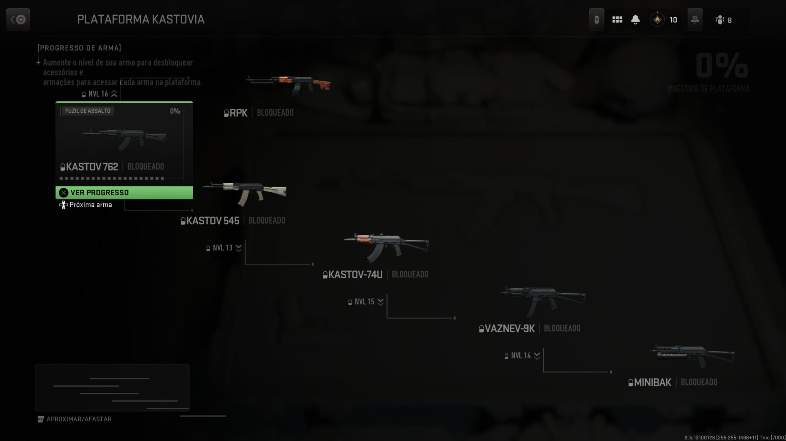
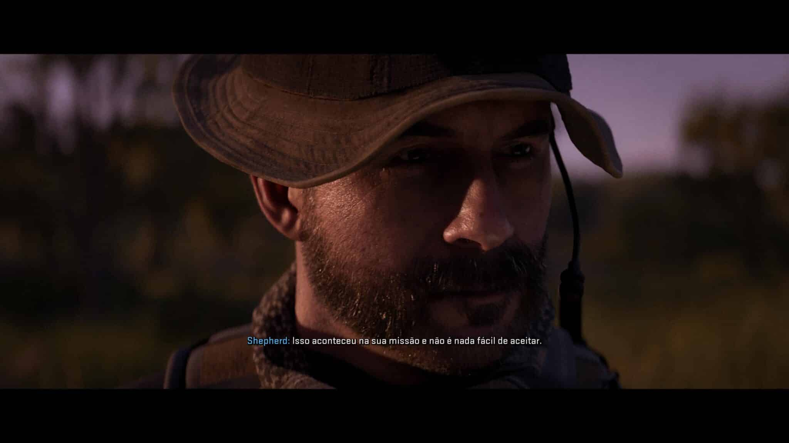

Call of Duty Modern Warfare II: vale a pena?

Uma boa campanha, multiplayer equilibrado, mas os menus tornam a experiência um pouco confusa.
É fácil olhar para cada fim de ano e pensar: “outro CoD… o mesmo jogo de sempre”. Mas, na realidade, não é bem assim. Cada jogo da série tem a impressão do seu estúdio criador. Call of Duty Modern Warfare II é mais uma prova disso.
À primeira vista, pode parecer tudo a mesma coisa, mas quando você realmente experimenta por um tempo um Call of Duty da Treyarch e depois um da Infinity Ward, sente muitas coisas diferentes, tanto em gameplay quanto em narrativa.
E desta vez temos um produto da IW, que na verdade é uma continuidade de um projeto muito bem sucedido de 2019. E este de 2022 é tão bom quanto o anterior. Se os menus e algumas escolhas de mecânicas não se destacam, o jogo compensa na hora dos tiroteios e com uma campanha que segura as pontas.
Glória aos ícones

Modern Warfare II impressiona logo nos primeiros minutos por seu gráficos super realistas no modo história. A modelagem dos personagens, seus truques de iluminação e os cenários fechados (perfeitos para uma incursão noturna) são absolutamente incríveis.
E não só no PlayStation 5. Nos demais consoles o game também destaca nestes quesitos. Talvez seja o Call of Duty mais bonito de todos os tempos.
A narrativa “joga no seguro”, e isso é muito bom, na verdade. Se em alguns jogos da série chegamos a ir até ao espaço em aventuras futuristas, desta vez a fórmula é ser mais contida. Até mesmo em escala.
A série Modern Warfare clássica se aproveitou bastante de intrigas geopolíticas entre grandes potências, envolvendo um pouco de Oriente Médio, com o pretexto de graves ameaças aos americanos.
MW II ainda conta com tudo isso, mas em uma escala muito menor e mais suavizada. Na narrativa, devemos perseguir um terrorista internacional que pode ter armas de destruição em massa pelo México e partes da Europa.
Os ambientes variam de locações mais lineares, focadas em liquidar com alvos específicos, a áreas mais abertas, propícias para perseguições alucinantes. Se você está acostumado com Call of Duty, não vai ser tão surpreendido por tantas cenas de ação, mas mesmo assim elas continuam muito bem dirigidas.
Se a criatividade não é muito bem explorada, temos o retorno de consagradas figuras como Ghost, SOAP e Capitão Price que acabam sendo os principais chamarizes para a trama. Desta vez nos aprofundamos um pouco mais no relacionamento da Força Tarefa 141 e vamos entendo o porquê deles serem tão coesos e companheiros.
No total, são cerca de 7 horas de campanha em 17 missões, das mais empolgantes a outras não tão legais assim.
O que ainda deixa a desejar é a ausência de situações mais desafiadoras, que envolvam um pouco mais de construção. No geral, você está sempre perseguindo ou fugindo em cenas eletrizantes, sem muito cérebro. Apenas atire loucamente, se esconda e continue gastando munição como se fosse seu último dia na Terra. Claro, não é tornar a campanha de Call of Duty um BioShock, apenas inserir novos elementos que ajudem a contar uma boa história.
Se não está quebrado, não conserte (ou quase isso)
Call of Duty Modern Warfare II aplica bastante a filosofia do anterior. É frenético, dinâmico, explosivo e divertido no fim das contas. E este é o principal ponto a ser observado.
O coração do multiplayer não foi alterado. Então, nada de futurismos exagerados, saltos duplos ou coisas que só conseguimos ver em filmes de ficção científica.
Ele faz o que tem que ser feito para ser considerado – até o momento – um bom Call of Duty. O desenho dos mapas é bacana, a diversidade de modos é interessante, com destaque para o Modo em Terceira Pessoa, as gunfights estão ótimas, o balanceamento de armas, vejam só, está bem adequado para um começo de temporada.
Aí vêm as adições que realmente fazem uma bela diferença no gameplay. A primeira e mais sensível delas é o Armeiro.
Trata-se de um novo sistema de desbloqueio de armas. Não basta apenas jogar partidas, conquistar XP e ir desbloqueando armas conforme avanço. Agora você você tem que pensar com objetivo.
Quase como uma árvore de habilidades, a liberação acontece por plataformas. Você começa em uma plataforma básica da M4 e após conseguir experiência, libera um attachment, que na verdade é uma plataforma para uma outra arma. E, com essa nova arma, evolui novamente até liberar outra e mais outra.
Parece confuso no começo, mas depois de umas partidas você pega o jeitão e começa a entender que para ter aquela SMG preferida, primeiro vai ter que jogas bastante com outras armas.
Em outras palavras: o jogo te obriga a experimentar várias opções até você chegar onde deseja. Se por um lado incentiva o gameplay, por outro força a testar coisas que você notoriamente não gostaria.
Um ponto positivo desta proposta é que alguns caminhos são reduzidos. É possível liberar acessórios uma única vez que podem ser usados em várias armas. O que encurta o caminho neste sentido.
Outro aspecto muito positivo é como as armas são realmente bem diferentes entre si. Seja na operação, recoil, tempo de carregamento, saque, efetividade e na sonoplastia. Às vezes, em jogos com tanta variedade, é difícil perceber mudanças. Isso não acontece em MW II. Cada arma aqui é realmente única.
O que não é tão personalizado assim são os próprios attachments. Em muitas situações equipar o cano A ou B não muda quase nada. Ou, pelo menos, não há uma percepção notável de como isso altera as coisas. Isso fruto da ausência de um menu específico – presente no Vanguard – onde era possível ver em números as estatísticas.
Este era um ponto que não precisava tanto de consertos. Ajustes, claro, são sempre bons pra melhorar, mas nesse caso… É difícil encontrar, por exemplo, opções que antes eram mais fáceis e úteis. Hoje o jogador leva mais tempo para achar o que realmente quer do que efetivamente fazendo algo.
Outras menções importantes são à baixa quantidade de mapas, os som dos passos e à polêmica do minimapa – que não denuncia a posição de quem atira – geram discussões.
O dever chama
Para os fãs, quando o Dever o chama, é inevitável. Renegar um convite é deserção. Neste caso, não é nenhum fardo, já que o game tem muito mais qualidades do que defeitos. Cometeu seus deslizes como menus muito mal organizados, erros de servidores – no lançamento -, e ao entregar uma campanha que poderia ousar mais.
Por outro lado, a perspectiva de um futuro recheado de novos conteúdos, como a integração com o Warzone 2.0, promete ser um diferencial e tanto para a vida útil do game.
Até para os que deixaram a série de lado em Cold War e no Vanguard, há bons motivos para um realistamento nas fileiras de Modern Warfare II.
Fonte:MeuPlastation